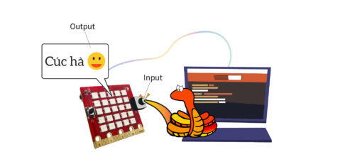
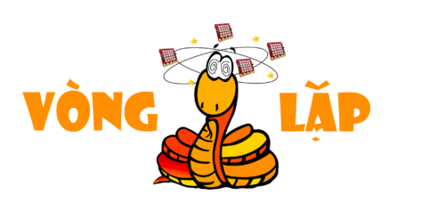

Nút nhấn
Trong các bài trước, bạn đã học được cách viết các lệnh yêu cầu Yolo:Bit làm các việc nào đó như hiện ra hình ảnh trên màn hình LED. Các lệnh đó gọi là lệnh điều khiển và xuất ra thông tin (output). Chúng ta cũng cần thiết bị Yolo:Bit phản ứng lại với các tác động từ bên ngoài, gọi là xử lý thông tin nhập vào (input).
Hãy nhớ một cách đơn giản nhé, output là những gì thiết bị đưa ra cho chúng ta nhìn thấy, hoặc nghe được, còn input là những thông tin được đưa vào để thiết bị nhận được và xử lý.
{kind=link}
Một thành phần input quan trọng được tích hợp sẵn trên Yolo:Bit đó là 2 nút nhấn trái phải được đặt tên là A và B.
Chúng ta sẽ lập trình cho MicroPython xử lý khi các nút được nhấn. Bạn hãy thử chương trình này:
from yolobit import *
sleep(5)
display.scroll(str(button_a.get_presses()))
Trong đoạn chương trình trên thì chúng ta cho Yolo:Bit tạm dừng chương trình trong 5 giây và sau đó hiện ra số lần nút A được nhấn trong 5 giây tạm dừng đó.
Hàm sleep yêu cầu tạm dừng chương trình trong khoảng thời gian do bạn truyền vào khi gọi hàm. Trong đoạn lệnh trên chúng ta truyền vào số 5, tức là yêu cầu tạm dừng 5 giây.
Trong dòng số 3, chúng ta dùng hàm get_presses() của đối tượng button_a để đọc ra số lần nút A được nhấn. button_a là đối tượng có sẵn trong thư viện yolobit để làm việc với nút A. Tương tự cho nút B chúng ta sẽ sử dụng đối tượng button_b.
Dòng lệnh gọi hàm display.scroll bạn nhìn thấy có vẻ hơi lạ phải không nào vì được lồng nhiều lớp trong các ngoặc tròn (). Do hàm get_presses() trả về một số, nên chúng ta dùng hàm str() để đổi sang dạng chữ. Các câu lệnh lồng nhau như vậy rất giống hình ảnh các con búp bê Nga được lồng vào nhau từ nhỏ đến lớn phải không nào?
{kind=link}
MicroPython sẽ xử lý từ bên trong ra ngoài trong trường hợp lệnh được viết như lồng nhau thế. Từ câu lệnh gốc ban đầu là:
display.scroll(str(button_a.get_presses()))
Giả sử bạn nhấn 10 lần trong thời gian tạm dừng, hàm button_a.get_presses() sẽ trả về 10, khi đó câu lệnh cần xử lý sẽ thành:
display.scroll(str(10))
Hàm str() sẽ đổi 1 số thành 1 chuỗi chữ, nên câu lệnh sẽ thành:
display.scroll(“10”)
Khi đó, hàm display.scroll() sẽ hoạt động như trong các ví dụ trước đó. Cũng không phức tạp lắm nhỉ.
Vòng lặp
{kind=link}
Trong phần lớn các chương trình viết ra, thì bạn sẽ cần chương trình đợi một sự kiện nào đó xảy ra (ví dụ như tới giờ thực hiện, nút A được nhấn hay khi nhiệt độ quá cao…) và thực hiện xử lý tình huống đó.
Để làm được việc này, bạn sẽ cần dùng các lệnh về vòng lặp. Một vòng lặp phổ biến trong MicroPython là vòng lặp while, nó sẽ liên tục kiểm tra xem điều kiện nào đó có xảy ra hay không, nếu có thì sẽ thực hiện các lệnh được khai báo bên trong vòng lặp, còn nếu không thì chương trình sẽ tiếp tục chờ và kiểm tra liên tục.
Các lệnh được khai báo trong vòng lặp này sẽ được nhóm thành 1 khối lệnh, tức là một danh sách các lệnh cần được thực hiện. Ví dụ các khối lệnh trong thực tế nhé. Giả sử một ngày hôm nay chúng ta cần làm 3 việc là:
Đi chợ mua đồ
Dọn dẹp nhà cửa
Nấu ăn
Với mỗi việc đó, chúng ta sẽ liệt kê chi tiết ra các việc cần làm cho mỗi việc:
Đi chợ mua đồ
Trứng
Thịt
Gạo
Dọn dẹp nhà cửa
Quét nhà
Lau nhà
Rửa chén
Nấu ăn
Nấu cơm
Nấu canh
Chiên trứng
Như bạn thấy ở trên, các danh sách công việc chi tiết được nhóm lại và được viết rõ ràng dễ nhìn bằng cách thụt đầu vào so với tên công việc chính. Tương tự các khối lệnh cũng được viết như vậy trong một chương trình MicroPython.
Chúng ta thử xem chương trình ví dụ bên dưới đây:
from yolobit import *
while running_time() < 10000:
display.show(Image.ASLEEP)
display.show(Image.SURPRISED)
Trong chương trình trên, hàm running_time() sẽ trả về tổng thời gian từ lúc Yolo:Bit được cấp điện và chạy đến thời điểm hiện tại, và tính bằng đơn vị milli giây.
Câu lệnh while running_time() < 10000: kiểm tra xem tổng thời gian chạy có nhỏ hơn 10000 milli giây (bằng 10 giây) hay không. Nếu đúng là nhỏ hơn, thì yêu cầu MicroPython hiện ra hình ảnh tên là Image.ASLEEP. Các bạn để ý thấy cách viết dòng lệnh bên dưới while được thụt vào, giống như khi ta khai báo danh sách công việc chi tiết ở bên trên.
Sau đó, nếu chạy được một lúc và tổng thời gian chạy vượt quá 10000 milli giây thì màn hình Led sẽ hiện ra hình ảnh Image.SURPRISED. Vì sao vậy nhỉ? Bởi vì khi đó điều kiện của câu lệnh while sẽ bị sai (running_time không còn nhỏ hơn 10000 nữa), chương trình sẽ kết thúc vòng lặp và chạy tiếp câu lệnh bên dưới khối lệnh while.
Bạn thử chạy chương trình để xem thử có phải đúng như vậy không nhé.
Xử lý sự kiện
Nếu chúng ta muốn MicroPython xử lý sự kiện nút nhấn thì chúng ta sẽ dùng một vòng lặp while vô tận và kiểm tra xem nút có được nhấn ở trong vòng lặp đó không bằng hàm is_pressed.
Một vòng lặp vô tận có cú pháp như sau:
while True:
# do something
Do điều kiện kiểm tra của vòng lặp while là True (luôn đúng), nên vòng lặp này sẽ chạy mãi mãi.
Chúng ta hãy thử viết một chương trình luôn hiện ra mặt buồn (Image.SAD). Nhưng khi nút A được nhấn thì hiện ra mặt cười (Image.HAPPY). Nếu nút B được nhấn thì xóa màn hình và dừng chương trình.
from yolobit import *
while True:
if button_a.is_pressed():
display.show(Image.HAPPY)
elif button_b.is_pressed():
break
else:
display.show(Image.SAD)
display.clear()
Trong đoạn chương trình trên, chúng ta dùng một câu lệnh đặc biệt là if và elif (viết tắt của else if) để kiểm tra nút A có được nhấn hay không. Câu lệnh này hoạt động như sau:
if something is True:
# do one thing
elif some other thing is True:
# do another thing
else:
# do yet another thing.
Cấu trúc rất giống một câu tiếng Anh bình thường phải không nào?
Hàm is_pressed() chỉ trả về một trong 2 kết quả: True (đúng) hoặc False (sai). Nếu nút đang được nhấn thì hàm này trả về True, ngược lại sẽ trả về False.
Trong vòng lặp vô tận trên, ta luôn kiểm tra xem nút A có được nhấn không, nếu nút A được nhấn thì hiện ra hình ảnh Image.HAPPY. Nếu nút A không được nhấn thì ta lại kiểm tra tiếp nút B có được nhấn không, nếu có thì thoát khỏi vòng lặp bằng lệnh break. Còn cuối cùng nếu không nữa (cả nút A và nút B đều không được nhấn) thì hiện ra mặt buồn Image.SAD.
Cuối chương trình ta xóa màn hình Led và kết thúc vì đó là lệnh cuối cùng.
Ngoài ra bạn còn có thể kết hợp nhiều điều kiện trong câu lệnh if hay elif bằng các toán tử như and, or và not.
Ví dụ nếu ta muốn kiểm tra xem cả 2 nút A và B có được nhấn không thì có thể dùng như sau:
from yolobit import *
while True:
if button_a.is_pressed() and button_b.is_pressed():
display.show(Image.HAPPY)
else:
display.show(Image.SAD)
Làm việc với nút nhấn kết hợp với vòng lặp và các lệnh kiểm tra sẽ giúp các bạn viết được các chương trình có logic phức tạp.